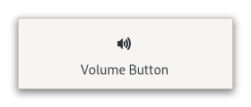

Gtk.VolumeButton¶
Example¶
- Subclasses
None
Methods¶
- Inherited
Gtk.ScaleButton (10), Gtk.Widget (181), GObject.Object (37), Gtk.Accessible (15), Gtk.Buildable (1), Gtk.Orientable (2)
- Structs
class |
|
Virtual Methods¶
Properties¶
Name |
Type |
Flags |
Short Description |
|---|---|---|---|
r/w/c/en |
|
Signals¶
- Inherited
Fields¶
- Inherited
Name |
Type |
Access |
Description |
|---|---|---|---|
parent |
r |
Class Details¶
- class Gtk.VolumeButton(**kwargs)¶
- Bases
- Abstract
No
GtkVolumeButtonis aGtkScaleButtonsubclass tailored for volume control.An example
Gtk.VolumeButtonDeprecated since version 4.10: This widget will be removed in GTK 5
- classmethod new()[source]¶
- Returns
a new
GtkVolumeButton- Return type
Creates a
GtkVolumeButton.The button has a range between 0.0 and 1.0, with a stepping of 0.02. Volume values can be obtained and modified using the functions from [class`Gtk`.ScaleButton].
Deprecated since version 4.10: This widget will be removed in GTK 5
Property Details¶
- Gtk.VolumeButton.props.use_symbolic¶
-
Whether to use symbolic icons as the icons.
Note that if the symbolic icons are not available in your installed theme, then the normal (potentially colorful) icons will be used.
Deprecated since version 4.10: This widget will be removed in GTK 5